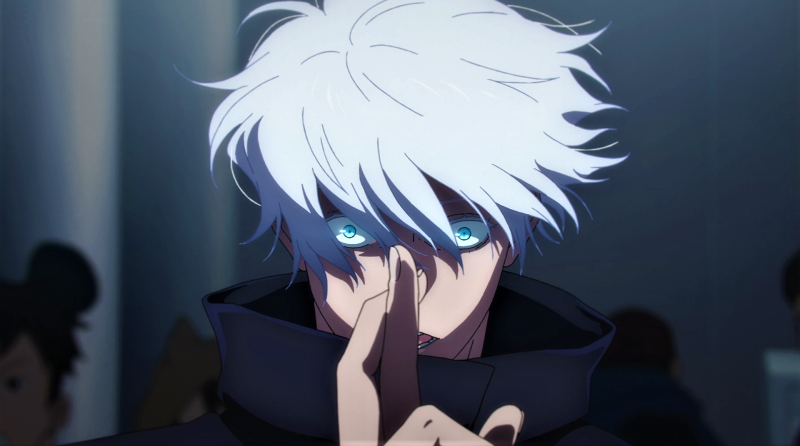

O Que é Jujutsu?
Elemtentos principais que há em jujutsu
- Energia Almadiçoada
-
É a fonte de poder que os feiticeiros jujutsu utilizam. Deriva de emoções negativas, como medo, ódio e raiva.
-
Os feiticeiros aprendem a controlar e manipular essa energia para realizar diversas técnicas e feitiços.
- Tecnicas Almadiçoadas
- São habilidades específicas que cada feiticeiro pode usar, baseadas na manipulação da energia amaldiçoada.
- Exemplos incluem ataques físicos aprimorados, criação de barreiras, e invocação de criaturas.
-
Objetos Amaldiçoados
-
São itens que contêm energia amaldiçoada e possuem habilidades especiais.
-
Podem ser usados tanto por feiticeiros quanto por maldições para aumentar seu poder.
- Domínios
- Espaços criados por feiticeiros poderosos ou maldições, onde suas técnicas são amplificadas e se tornam praticamente inevitáveis.
- Cada domínio é único e reflete a personalidade e as habilidades do criador.
- Contrato e Condições
- Feiticeiros podem estabelecer contratos com maldições ou colocar condições em suas técnicas para aumentar seu poder.
- Essas condições geralmente envolvem sacrifícios ou limitações significativas.
Satoru Gojo

O Mais Honrado Até Na Sua Morte
“O Infinito existe em todos os lugares.”
Resumo de Satoru gojo
Inicio
- Formação: Estudou na Escola Técnica de Jujutsu de Tóquio, onde se destacou como um dos alunos mais poderosos e promissores.
- Primeira Grande Confrontação: Durante uma missão, enfrentou e derrotou o poderoso feiticeiro amaldiçoado Toji Fushiguro, solidificando sua reputação.
Fim
- Incidente de Shibuya:Durante o Incidente de Shibuya, Gojo é confrontado por forças amaldiçoadas e acaba sendo selado por Kenjaku, que usa um plano complexo para isolá-lo, removendo-o da luta contra Sukuna e outras ameaças.
- Retorno do Selamento: Após ser selado durante o Incidente de Shibuya, Gojo finalmente é libertado, mas enfrenta Sukuna em um confronto direto, onde as expectativas são altas, já que ele é considerado o feiticeiro mais forte.
- Confronto Épico: Gojo e Sukuna se enfrentam em uma batalha intensa, usando suas habilidades poderosas. Gojo tenta empregar sua Técnica Limitless e o Seis Olhos para combater Sukuna, que também revela suas habilidades impressionantes.
- Desfecho da Batalha:Durante a luta, Gojo demonstra sua força, mas Sukuna, utilizando suas próprias técnicas e estratégias, consegue superar Gojo. Em um momento crucial, Sukuna, aproveitando uma brecha, ataca Gojo com um movimento mortal.
- Morte de Gojo:Sukuna consegue derrotar Satoru Gojo, resultando em sua morte. Essa derrota marca um ponto de virada na história, afetando drasticamente a luta contra as maldições e o futuro dos personagens.
Sukuna

Rei das Maldições
Inicio
- Origem:Ryomen Sukuna foi um poderoso feiticeiro amaldiçoado que viveu há mais de mil anos. Conhecido como o "Rei das Maldições", ele possuía habilidades extraordinárias e um grande número de seguidores.
- Oposição aos Feiticeiros:Sukuna era um antagonista feroz para os feiticeiros jujutsu, e suas ações violentas e malignas o tornaram uma figura temida. Ao longo de sua vida, ele foi responsável por várias tragédias e mortes.
- Possessão de Yuji Itadori:No início da série, Yuji Itadori consome um dos dedos de Sukuna para ganhar poder e salvar seus amigos, tornando-se o hospedeiro de Sukuna. Isso cria uma relação complexa entre os dois, onde Yuji luta para manter o controle sobre seu corpo.
- Incidente de Shibuya:Durante o Incidente de Shibuya, Sukuna se torna um jogador ativo, usando a confusão para se libertar do controle de Yuji. Ele demonstra seu poder ao lutar contra diversos feiticeiros e maldições, mostrando seu verdadeiro potencial.
- Sua Vitória Sobre GojoSukuna é conhecido por sua brutalidade e força impressionante. Ele enfrenta Gojo em um confronto épico, onde suas habilidades são postas à prova, e sua estratégia e poder tornam-se centrais na batalha.
- O Futuro:Com o retorno de Sukuna em sua forma plena e seu status como uma das principais ameaças da série, ele continua a ser um antagonista central. A luta contra Sukuna e a busca para derrotá-lo se tornam um dos principais focos da narrativa.
Fim